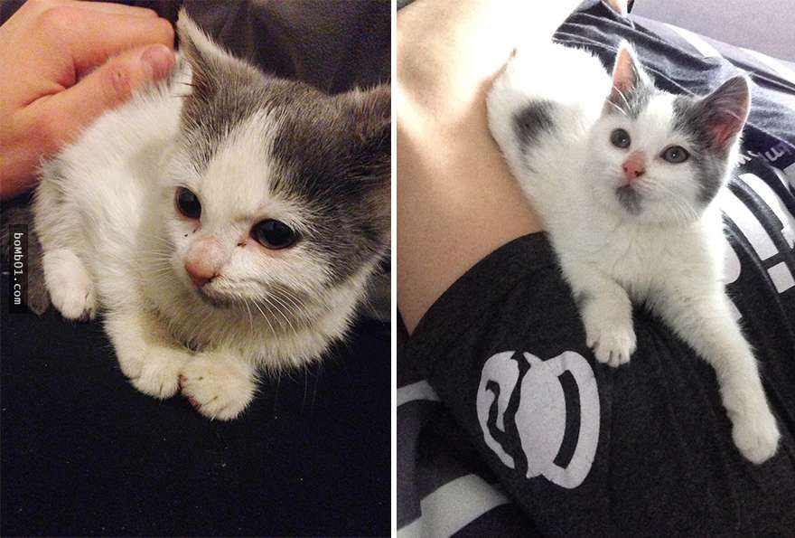
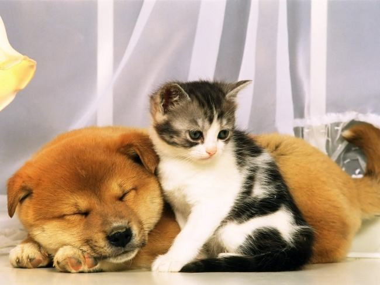
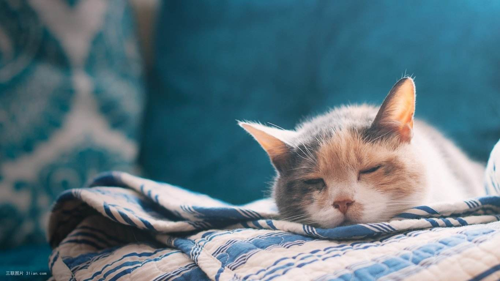

被领养的‘孩子’祝幸福安康
25k阅读·35分钟前发布
情感
爱心
lalalalal

跟猫建立感情这件事，找我啊! 天赋异禀泡猫好手，无论幼猫成猫家猫野猫洋猫土猫流浪猫所向披靡战无不胜!作为一个从小就特别喜欢猫，也特别招猫喜欢的妹子，平时在路边跟猫打招呼都能得到回应，十只猫里面有九只都会缴械投降，凑过来翻肚皮蹭小腿。剩下那只最有骨气的猫，也坚持不了几天。就连我们小区楼下那只最凶猛威武生人勿近的猫霸，后来也愿意趴在我腿边让我摸摸头了。如果这件事跟前尘后世没什么关系的话(hhhh脑洞大)，那就是我无师自通掌握了跟猫相处的技巧。现将技巧分享如下，考虑到个体差异，未必人人都能修成大法，还望诸位爱猫人士斟酌学习，切莫走火入魔。第一招，学猫叫。打完这三个字想起一个笑话，为什么对着猫叫，猫也会回应呢?-事情也许是这样的。人类：“喵喵喵” (我是傻逼) 猫星人:“喵” (没错)不要笑，这一招是独门绝技，最基本，也最难。因为我所有跟猫的搭讪都是从学猫叫开始的，一声停步，二声转头，三声目光交流...虽然吧，我也不知道我的叫声其实是几个意思，但是能引猫来就有意思。而这招难就难在了学猫叫上。学就要学像了，不是字正腔圆地念出“喵”这个字就算了。猫尤其是成年猫(幼猫短促清脆，暂时学不来)，叫声稍长还带点起伏节奏，大约是“妙~~~噢~呜”，练习时跟真猫的叫声对比一下，越像越好。然，不才在下我这二十年来还没听过谁学猫叫学得比我像。听完我弟的一声“喵”，转身就走的猫也不少。第二招，耐心陪伴创造独处机会。路边搭讪野猫基本就是一叫二等，学猫叫之后耐心蹲着等候，更多的细节此处按下不表。这儿重点讲与家猫相处。和家猫最相处最大的优势是，你们在一个相对独立的安全的空间里面，不会有车辆行人小朋友突然经过，吓到刚刚迈出第一步的猫。和猫相处的第一准则是让它决定是否亲近你。(切莫强求，后果往往是三道抓痕，和更警惕的小眼神。)猫叫大法可成功吸引注意力，一般成猫都会很快对你亲近起来，至少建立起好感。
但是记住了，在它主动靠近你之前，不要凑过去摸人家! 不要凑过去摸人家!ヽ(≧Д≦)ノ 摸了的打手!当然了，在一些情况下，猫咪可能对你无动于衷。如遇见语言不通的幼猫或傲娇孤冷的大猫，或者你根本就发音不准......这种时候请务必保持耐心，切莫轻举妄动。保持友善态度并尽可能地延长同处一室的时间，把自己暴露在猫咪的视线内(不是让它暴露在你的视线内!)，给它足够时间去熟悉你的气味和存在，以及全新的环境。这个“共处一室”的“室”最好是一间房，一间准备让猫咪先住下来的房，如客厅、阳台、卧室等，而不是整个房子，并把其他门都关上。否则会大大分散猫咪的注意力，并降低安全感。猫咪探索够了新环境，就会来观察你。与此同时，你可以选择玩电脑，看电视，看书写作业等等，不时抽空看一下猫咪在干嘛，并报以友善地喵。实在喵不来就跟它说说话也行，声调轻柔自然就好了，总之就是刷存在感。记得，眼看手勿动!第三招，做一个经得起考验的人!(论铲屎官的职业素养)准备养猫之前，猫砂猫粮餐具什么的自然是要购置完备。如果是成年家猫换主人，或者是帮朋友代为照顾，记得猫砂和猫粮先用一样的牌子，最好是把它习惯的日常用品全拿过来继续用，日后有需要的话再慢慢换。猫厕所洗刷干净，猫砂倒满，香喷喷的粮食和清洁的饮水请务必供应充足，让猫咪觉得跟着你生活水准并没有降低。除了不能一来就做它不喜欢的事，比如洗澡打针，还要多做它喜欢的事来培养感情，比如喂食和铲屎。没有什么比定点喂食更能激发双方的爱了! 以前在美国那会儿宿舍养猫，早上6点50起来赶7点20的校车去上课，我一边洗漱穿衣一边给猫做饭急得跳，Milo一边追着我跑一边喵喵叫饿得跳，一人一猫在宿舍里好不热闹。待微波炉叮好，给它扣盘里，Milo喵叫骤停扑向猫盆，我拎包关门冲出宿舍，天下太平。一来二去，我俩成了患难之交，感情深到它每晚都要贴着我脸睡，糊我一脸毛：）(以前它喜欢跟我貌美室友睡的...) (其实我更喜欢一个人睡的...)给Milo铲屎简直是血泪史，你永远不知道它为什么有这么多这么臭的屎，回回都熏得我想哭。可是它很开心，觉得我是一个值得信赖的铲屎官，黏我黏到飞起，脑壳肚皮任君摸。后来在广州实习，邻居姐姐出差拜托我照顾她的六岁大猫，也是如此建立的深厚情谊。每天我下班奔回家，还没到门口就能听到它在门内热切地呼唤。拿钥匙一开门，它跳着给我开路，引我到猫盆。我也不含糊背着包就它添猫粮，然后一猫一人都满足地消停了。它其实也不是很饿，猫粮吃几口就来蹭我了，所以我猜这约莫就是一种考验? 要知道作为一只看遍红尘云淡风轻的老猫，它以前对我种种示好行径颇为不屑，直到我俩相依为命接受了考验之后才打破僵局。学猫叫搭讪来的猫也许只是一时冲动，一点点风吹草动就会弃你而去。而共同生活日久生情的猫才是情比金坚，不管岁月变迁此生爱你铲屎的容颜。ლ(´◉❥◉｀ლ)

相关推荐
Quamdhddsdusghj
15k阅读·1k评论
Quamdhddsdusghj
15k阅读·1k评论
Quamdhddsdusghj
15k阅读·1k评论
Quamdhddsdusghj
15k阅读·1k评论
Quamdhddsdusghj
15k阅读·1k评论